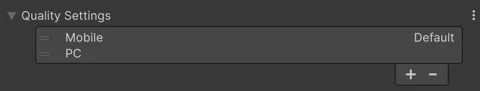

Customize specific project settings for each build profile to create unique configurations for your target platforms.
Note: Build profile overrides are used in Play mode and within the Unity Player.
Refer to the following sections to add and manage settings through Add Settings, including information on overriding Diagnostics and Quality Settings.
Use the Add Settings button to add optional settings to a build profile and then customize them as required. For a list of settings you can add, refer to Build Profiles window reference.
To add settings to a build profile, follow these steps:
The settings you add appear in a section with a foldout, where you can customize them for the build profile.
To remove or reset the settings in an added section, follow these steps:
Open the added section’s More (⋮) menu.
Select one of the following options:
| Property | Description |
|---|---|
| Reset | Reset the setting values in the section to the global values for the target platform. Set the global values from Edit > Project Settings. |
| Remove | Remove the section from the Build Profiles window. To configure the settings again, add the section back with Add Settings. |
The Diagnostics section is always visible for supported build profiles and isn’t added through Add Settings.
To override the default Diagnostics settings established in Project Settings, follow these steps:
Your build profile now uses the assigned value and overrides the Project Settings. To revert to using the value from Project Settings, set Diagnostic Data to Use Project Settings → Diagnostics.
When you add the Quality Settings section through the Add Settings button, quality levels for the build profile appear in the Quality Settings foldout.

The list inherits quality levels for your target platform from the global Quality levels located in Edit > Project Settings > Quality.
Note: When in Play mode, the quality level used is the selected level in the global quality settings.
To add a new quality level to your build profile, follow these steps:
Note: Renaming or deleting a quality level in the global quality settings updates any build profile that contains that level.